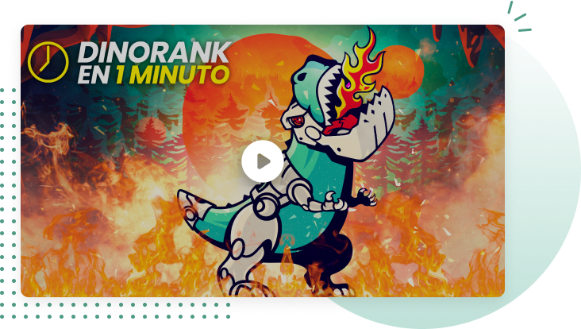
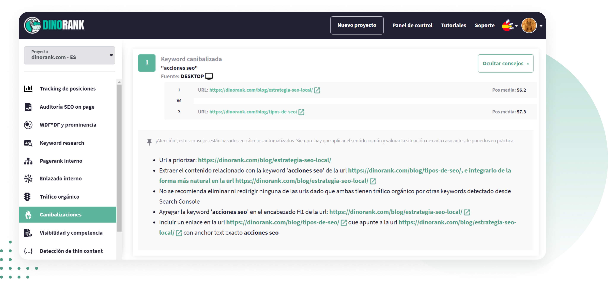

Ya lo sabes, no puedes conseguir un buen posicionamiento tu sitio web si tienes canibalizaciones de tus keywords.
Una canibalización se da cuando dos URLs están posicionando por la misma keyword y compiten entre ellas, por eso ninguna de las dos puede progresar.
Pero lo que igual no sabes, o no le das mucha importancia, es que para evitar canibalizaciones debes revisar y optimizar de forma periódica tu proyecto.
Es un error muy común que tiene consecuencias negativas directamente en el posicionamiento (y autoridad) de tu site.
Al no solucionar las canibalizaciones que tengas en tus contenidos confundes a Google, tu web o tienda online pierde autoridad y, además, confundes también a tu usuario, por lo que caerán las visitas, con lo que eso significa.

Esto es lo que te ofrece:
Marca la keyword canibalizada
.URLs que posicionan por esa keyword.
Muestra su posición media.
Ofrece consejos para solucionarlas.
Cómo funciona la función Keyword Research.
-
Pantalla inicial.
-
Lo primero tienes que sincronizar tu proyecto Google Analytics y Search Console. Es muy fácil, solo es poner la URL y dar al botón sincronizar.
-
Pantalla de canibalizaciones.
DinoRANK detecta las canibalizaciones de palabras que tienes en tu web o comercio electrónico y te ofrece consejos para que las soluciones.
-
Indica las canibalizaciones detectadas, es decir, todas las URLs que apuntan a una misma intención de búsqueda.
-
Señala cuál es la palabra clave canibalizada.
-
También te dice la posición media para que sepas qué URL mantener y en cuáles hacer una redirección 301.

Puedes desplegar los consejos que te ofrece para solucionarlo. Ten en cuenta que son consejos basados en cálculos automáticos, por lo que es importante que valores si son los óptimos para tu proyecto.
-
Te indica, qué URL hay que priorizar.
-
Después te dice que extraigas el contenido relacionado de las URLs que vayas a redireccionar y lo integres de la forma más “natural” posible en la URL que quieras mantener.
-
Te aconseja en qué lugares debes introducir la keyword principal para mejorar el posicionamiento.
-
También te dice que insertes un enlace en la URL “débil” para que apunte hacia la que vas a posicionar y el anchor text exacto que debes utilizar.
Ten en cuenta la intención de búsqueda
Aunque sean keywords diferentes, si responden a una misma query, se canibalizarán. Planifica tus contenidos con estrategia.
No confundas a Google porque te penalizará
Si divides la autoridad en distintas páginas que compiten por posicionar la misma keyword, Google no sabrá cuál es mejor para el usuario.
Piensa en lo que el usuario quiere encontrar
Y ofréceselo. Si alguien ve dos URLs de tu misma web en una SERP, se confundirá, dudará y posiblemente buscará otro resultado.
Opiniones de clientes que usan DinoRANK en su día a día para mejorar su visibilidad.
Es imposible hacer SEO sin los datos que DinoRank proporciona.
Ha optimizado mucho nuestro trabajo en la agencia, tanto a la hora de hacer SEO on Page, como para ver el progreso de nuestros clientes y el rendimiento de cada recurso.
La mayor ventaja es poder ver todos los problemas de una página con un sencillo análisis. También nos ayuda a hacer seguimiento del posicionamiento de las palabras clave y a conocer con detalle el CPC y la competencia de cada palabra clave.

María Ponsada
CEO Seoriginalsweb.com
La gran virtud de DinoRANK es que es una herramienta SEO muy económica pero también muy completa.
Cuando inicias un proyecto intentas contener los gastos usando mil y una herramientas gratuitas para analizar las métricas de tu web. Con DinoRANK, no tengo que saltar de herramienta en herramienta.
Su Keyword research ha cambiado mi manera de afrontar la redacción de los posts. La cantidad de palabras clave derivadas y la rapidez con las que se logran, me enamoró desde el primer momento.
La funcionalidad que más me ha sorprendido es el Tracking de posiciones. Es muy útil para controlar la evolución de mis keywords y ver cómo reacciona la competencia.

Francisco Marhuenda Sala
Webmaster laguíadelchollo.com
Es imposible hacer SEO sin los datos que DinoRank proporciona.
Ha optimizado mucho nuestro trabajo en la agencia, tanto a la hora de hacer SEO on Page, como para ver el progreso de nuestros clientes y el rendimiento de cada recurso.
La mayor ventaja es poder ver todos los problemas de una página con un sencillo análisis. También nos ayuda a hacer seguimiento del posicionamiento de las palabras clave y a conocer con detalle el CPC y la competencia de cada palabra clave.
María Ponsada
CEO Seoriginalsweb.com
Mi proyecto ha crecido en tráfico, autoridad y posicionamiento en palabras clave superimportantes para mi negocio. A pesar de haber trabajado con otras, la magia de WDF*DF y prominencia para saber, en un solo vistazo, lo que deben tener mis artículos a nivel de estructura es brutal y no necesito tener profundos conocimientos SEO.
Al principio dudé por ser menos conocida que Semrush o Ahrefs pero he conseguido rankear en los primeros lugares de Google para KW con intencionalidades de búsqueda muy competidas.
DinoRANK es intuitiva. Te dice en un solo vistazo la estructura que deberían tener tus artículos para posicionar por encima de la competencia.
Gracias a DinoRANK, he aprendido a distribuir el PageRank y los niveles de clicks para dar fuerza a las partes que más me interesan de mi página web. Antes no sabía lo importante que es la distribución de un buen interlinking dentro de mis proyectos.
Reviso continuamente el tracking de posiciones para ver como aumenta la visibilidad de mi web gracias al balance de mejora que he implementado con esta Suite. He aumentado el posicionamiento de mi página web para las palabras clave más fuertes y más importantes de mis proyectos.
DinoRANK me ha ayudado de forma muy visual e intuitiva a desarrollar una mejora del SEO On Page de mi web, a enriquecer los textos gracias al estudio de la competencia y hacer una auditoría de 0 a 100 que nada tiene que envidiar a Crawlers y/o herramientas SEO de precios bastante más elevados.
Sergio Cordero
sergiocordero.net
Mi proyecto ha crecido en tráfico, autoridad y posicionamiento en palabras clave superimportantes para mi negocio. A pesar de haber trabajado con otras, la magia de WDF*DF y prominencia para saber, en un solo vistazo, lo que deben tener mis artículos a nivel de estructura es brutal y no necesito tener profundos conocimientos SEO.
Al principio dudé por ser menos conocida que Semrush o Ahrefs pero he conseguido rankear en los primeros lugares de Google para KW con intencionalidades de búsqueda muy competidas.
DinoRANK es intuitiva. Te dice en un solo vistazo la estructura que deberían tener tus artículos para posicionar por encima de la competencia.
La gran virtud de DinoRANK es que es una herramienta SEO muy económica pero también muy completa.
Cuando inicias un proyecto intentas contener los gastos usando mil y una herramientas gratuitas para analizar las métricas de tu web. Con DinoRANK, no tengo que saltar de herramienta en herramienta.
Su Keyword research ha cambiado mi manera de afrontar la redacción de los posts. La cantidad de palabras clave derivadas y la rapidez con las que se logran, me enamoró desde el primer momento.
La funcionalidad que más me ha sorprendido es el Tracking de posiciones. Es muy útil para controlar la evolución de mis keywords y ver cómo reacciona la competencia.
Francisco Marhuenda Sala
Webmaster laguíadelchollo.com
Tengo varios proyectos, y me ha sido muchísimo más fácil encontrar nuevas keywords para posicionar y saber por las que ya estaba posicionando.
Hago keyword research para mis proyectos y de mis clientas casi a diario. La auditoría la uso muchísimo tanto para posibles clientes, como para controlar mis proyectos. Y la función de visibilidad es genial. Poder ver keywords de otras webs sin tener acceso a su search console. Mi web principal está subiendo visitas y me estoy posicionando en keywords muy interesantes. He comenzado un proyecto poco y ya está consiguiendo tráfico orgánico interesante, sin haber invertido en linkbuilding, solo con optimización de contenidos.
Con DinoRANK es muy fácil hacer keyword research, la auditoría completa del sitio y la visibilidad.
Tengo varios proyectos, y me ha sido muchísimo más fácil encontrar nuevas keywords para posicionar y saber por las que ya estaba posicionando.
Hago keyword research para mis proyectos y de mis clientas casi a diario. La auditoría la uso muchísimo tanto para posibles clientes, como para controlar mis proyectos. Y la función de visibilidad es genial. Poder ver keywords de otras webs sin tener acceso a su search console. Mi web principal está subiendo visitas y me estoy posicionando en keywords muy interesantes. He comenzado un proyecto poco y ya está consiguiendo tráfico orgánico interesante, sin haber invertido en linkbuilding, solo con optimización de contenidos.
Con DinoRANK es muy fácil hacer keyword research, la auditoría completa del sitio y la visibilidad.
Probé DinoRANK para 3 de mis páginas web, dos de ellas son nichos y una, mi proyecto principal.
No esperaba que por ese precio me diera tanto. Al principio dudé de si sería buena, pero tras probar Semrush, Ahrefs, Ubersuggest, ninguna me ha enamorado como Dinorank.
La uso a diario para hacer seguimiento de las keywords. La función de prominencia semántica ha sido un gran sorpresa, me ha permitido escalar posiciones muy rápido y me ha generado un incremento en los ingresos de la WEB.
Ver a golpe de click toda la estructura y fuerza interna de la página, poder realizar de manera sencilla una auditoría de SEO on Page o detectar canibalizaciones... me parece brutal.
Además, es la primera suite SEO todo en uno que he probado que te hace sentir en su comunidad y partícipe del proyecto, y lo valoro mucho.
Probé un mes y tengo claro que ya no me voy de Dinorank. Es una herramienta sencilla, completa, a bajo coste y que te hace llevar tu proyecto a dónde quieras, facilitándote la vida.
Gracias a DinoRANK, he aprendido a distribuir el PageRank y los niveles de clicks para dar fuerza a las partes que más me interesan de mi página web. Antes no sabía lo importante que es la distribución de un buen interlinking dentro de mis proyectos.
Reviso continuamente el tracking de posiciones para ver como aumenta la visibilidad de mi web gracias al balance de mejora que he implementado con esta Suite. He aumentado el posicionamiento de mi página web para las palabras clave más fuertes y más importantes de mis proyectos.
DinoRANK me ha ayudado de forma muy visual e intuitiva a desarrollar una mejora del SEO On Page de mi web, a enriquecer los textos gracias al estudio de la competencia y hacer una auditoría de 0 a 100 que nada tiene que envidiar a Crawlers y/o herramientas SEO de precios bastante más elevados.
Sergio Cordero
sergiocordero.net
Probé DinoRANK para 3 de mis páginas web, dos de ellas son nichos y una, mi proyecto principal.
No esperaba que por ese precio me diera tanto. Al principio dudé de si sería buena, pero tras probar Semrush, Ahrefs, Ubersuggest, ninguna me ha enamorado como Dinorank.
La uso a diario para hacer seguimiento de las keywords. La función de prominencia semántica ha sido un gran sorpresa, me ha permitido escalar posiciones muy rápido y me ha generado un incremento en los ingresos de la WEB.
Ver a golpe de click toda la estructura y fuerza interna de la página, poder realizar de manera sencilla una auditoría de SEO on Page o detectar canibalizaciones... me parece brutal.
Además, es la primera suite SEO todo en uno que he probado que te hace sentir en su comunidad y partícipe del proyecto, y lo valoro mucho.
Probé un mes y tengo claro que ya no me voy de Dinorank. Es una herramienta sencilla, completa, a bajo coste y que te hace llevar tu proyecto a dónde quieras, facilitándote la vida.